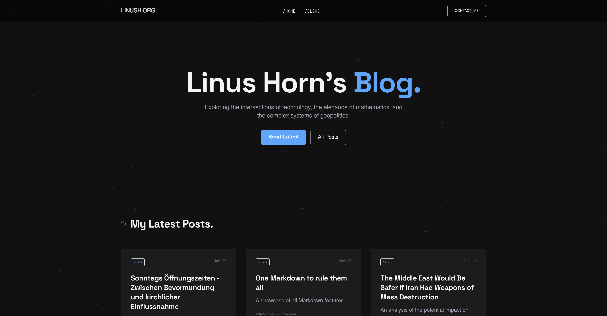
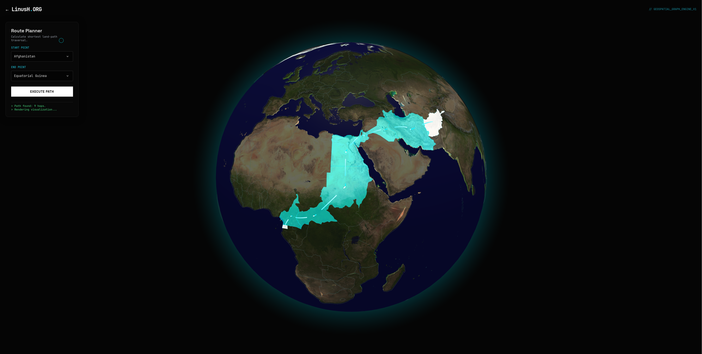
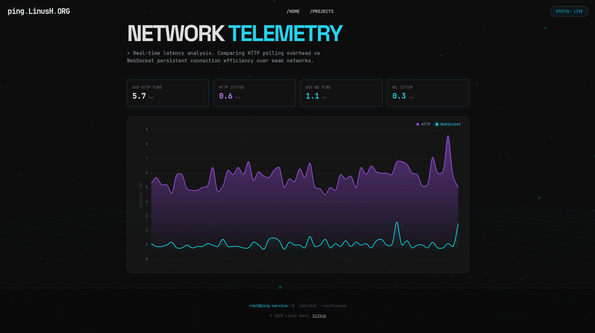
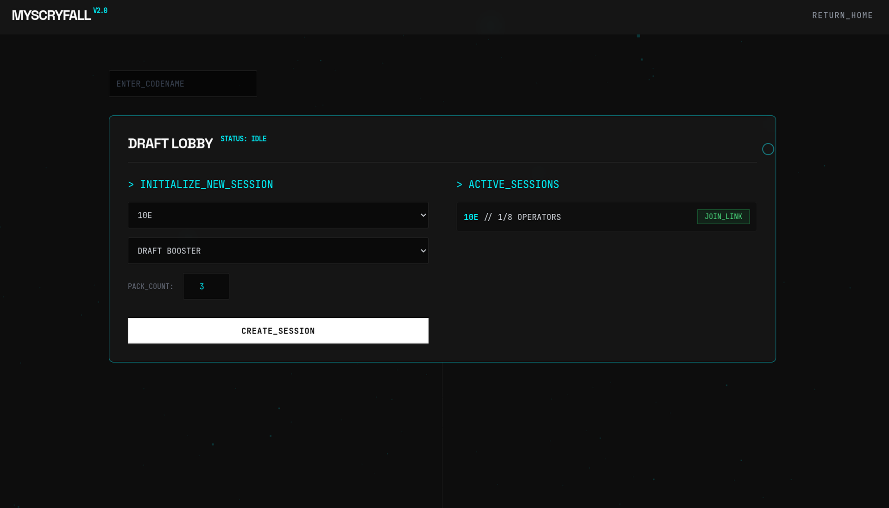

01 / Education
Focusing on algorithms, software engineering, and AI/ML systems. Applying coursework directly to homelab infrastructure and side projects.
Leistungskurse: Mathematics, English, Physics, Geography. Graduated with distinction.
02 / Work Experience
Embedded in operations for a 47-turbine offshore wind park. Processed >4 million sensor data points per day (150 sensors × 47 turbines, 5-second intervals). Built live dashboards for turbine performance monitoring and predictive maintenance. Automated weekly ops reports.
Built semantic search pipelines using embedding models and vector databases. Developed FastAPI services for data acquisition and processing. Side project: automated testing framework for internal web applications — latency benchmarking and API correctness validation.
03 / Projects

P-01 // CMS
blog.linush.org
Flat-file Markdown CMS with hybrid SSR+API rendering, sub-millisecond response, and perfect Lighthouse scores. Zero-dependency templating engine.
blog.linush.org ↗

P-02 // Geospatial
globe.linush.org
3D graph traversal engine — models world map as BFS-traversable graph. Wikipedia ETL pipeline + Globe.gl + D3.js MultiPolygon rendering.
globe.linush.org ↗

P-03 // Telemetry
ping.linush.org
Real-time network protocol analyzer. Benchmarks HTTP vs WebSocket RTT and jitter under high concurrency. Live Chart.js statistical dashboard.
ping.linush.org ↗

P-04 // Search Engine
scryfall.linush.org
Local search engine + draft simulator. Custom recursive descent DSL parser → AST → in-memory evaluation. Multi-threaded ETL + rarity-weighted probability algorithms.
scryfall.linush.org ↗
04 / Infrastructure
obelix · main
Dual Xeon E5-2670 v2
64 GB RAM · Tesla P40 24GB
1TB SSD · 9TB HDD
modt-build · WIP
i9-13980HX (MoDT)
64 GB DDR4
RX 5700 XT + Tesla P40
j1 · vps (hetzner)
CX22 · 2 vCPU · 4 GB RAM
80 GB SSD
j2 / j4 · offline
i7-7700HQ · GTX 1050Ti
i7-7700 · 16 GB